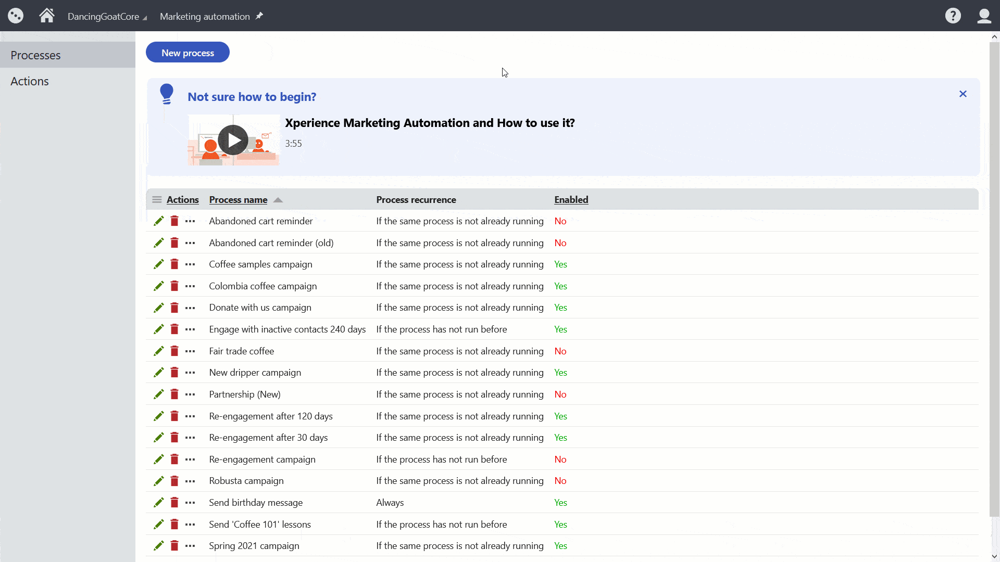
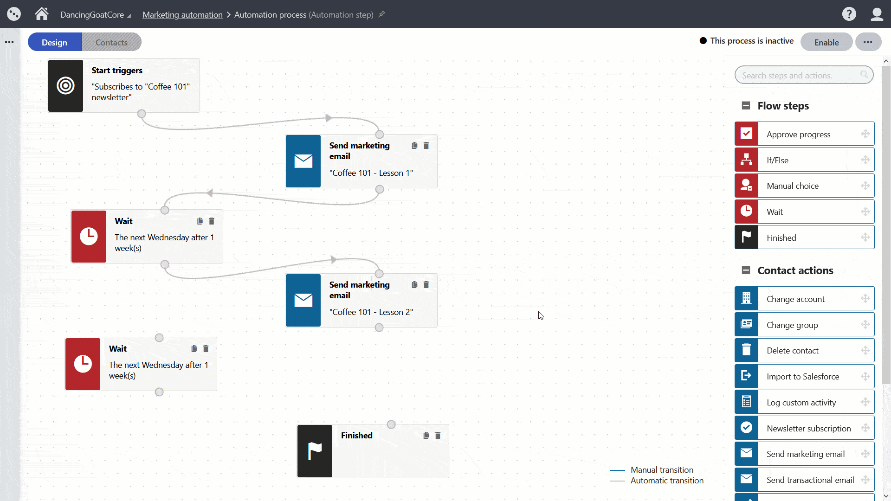

Marketing automation
Marketing automation helps you keep your customers happy and engaged. Processes can remind them about their incomplete checkouts or send them highly personalized content at the right moment in their customer journey. Marketing automation can also help marketers on the backend, for example, by keeping their contact database up-to-date by running automated sorts and cleanups.
Kentico Xperience comes with a built-in application you can use to automate various marketing processes.
Implementing personalized messaging via marketing automation helped LUCRF Super increase the appointment request by 193% compared with their previous website.
How does marketing automation work?
Decide which tasks you want to automate and what conditions will trigger the process, and then use the Marketing automation application to set it up.
The processes are built as series of steps that provide various functionality, such as "send email" or "wait for a specific time interval". You can fully customize not only the processes on your website, but with the help of developers, you can even add new custom step types. Kentico Xperience can start the processes automatically using condition-based triggers, or you can start the processes manually if that fits your user scenarios better.
Kentico Xperience runs all the enabled processes in the backend and constantly checks their trigger conditions against your contact database. When the system finds a contact that matches the conditions, it automatically starts the process for this contact.
How can you start automating your processes?
1. Decide what you want to automate
Identify the most time-consuming tasks you do by hand that can be automated, such as setting a specific contact property, sending personalized messages at a specific time, or creating a contact group that will collect all contacts that reached a specific score.
Here are a few ideas for using marketing automation:
Running drip campaigns to nurture your leads.
Reminding customers of their abandoned shopping cart.
Onboarding your new partners, users, and membership owners.
Sending after-purchase sequences about related products or “time to re-stock” reminders.
Teaching your customers to make use of their new product or service.
Including automated processes into your marketing campaigns – from replying to submitted forms to sending a series of emails to shape your prospect's experience.
Organizing your contacts into groups based on their action in different stages of their customer journey.
Running time-specific campaigns for seasonal offerings.
Sorting contacts in the database based on their properties and past actions.
2. Create the process
There are two ways to create a new process – from scratch or using an existing template. Making the process from scratch gives you a blank canvas. Using a template gives you a head start and can significantly speed up your work.
Marketing automation templates can contain effective processes that your customers best responded to. Using notes, you can describe the purpose of the process to your team members and remind them about specific steps they need to adjust when they use this template.

Save your most successful processes as templates, re-use them or share them with your team.
3. Set up trigger conditions
In Kentico Xperience, almost anything can become a trigger that you can use to start the automation process. When you’re setting the trigger, specify for which contacts or contact segments the process should run using the built-in macro condition builder.
The two most common situations that trigger a process are when:
A contact performs some activity.
It can be any activity on your site, like visiting a specific page or submitting an online form, or off-site, like opening a marketing email. Here’s how you can set the trigger:
Your browser does not support the HTML5 video element
A specific moment in time appears.
Be it the “the time of the year” to run a campaign for seasonal goods, time to clean your contact database, or a particular moment on your contacts' journey appears that will qualify them into a solid lead. Identify that moment in time – and keep your customers engaged! Here’s how you can set a time-based trigger:
Your browser does not support the HTML5 video element
4. Build the process workflow
Marketing automation processes are easy to build. Drag and drop the flow steps or actions onto the board and adjust their properties. Check out how you can add a marketing email from an existing email feed:
Your browser does not support the HTML5 video element
Learn how to create marketing emails in the Email marketing section of the Kentico Xperience Business tutorial.
With the Wait step, you can set when the process will continue. For example, you can make the process wait for a week – and then continue on the following Wednesday.
Your browser does not support the HTML5 video element
5. Enable the process
Before you start the process, connect all the steps together in the correct order. Then click the Enable button.

After you enable the process, Kentico Xperience takes care of the rest and starts the process for any contact that matches the conditions you specified in the trigger.
6. Analyze and optimize the performance of your process
The Marketing automation application brings all the performance data into one place – all your email reports, which contacts are in the process, or where they come from. You can find all the details about contacts that the process is running for on the Contacts tab. Analyze the data and optimize your processes to deliver the best customer experiences.
Your browser does not support the HTML5 video element
Try creating a process from a template for yourself
Let’s send every contact that has their birthday today a discount code using a new process with the Send birthday messages template.
Get the hosted trial
You will work on the Xperience Dancing Goat Core website hosted on Kentico Xperience servers. Before you dive in, request a hosted trial of Kentico Xperience.
Add a birthday date to a contact
First, let's prepare a contact to send the birthday message to.
Navigate to the Contact management application.
Search for Monica King contact (monica.king@localhost.local) in the list and View (ICON) the contact.
On the contact Profile tab, check if the Birthday date field matches the current date.
If not, click the Edit button to adjust the Monica King contact’s properties.
In the Birthday field, click the Today button to add today’s date.
Save your changes.
Create the new process
Switch to the Marketing automation application.
Create a New process:
Use the Send birthday message template.
In the Design tab within the process:
Click on the Send birthday email with coupon step to edit its parameters:
Select the Marketing engagement email Email feed.
Select the Happy Birthday email with coupon Email.
Click Apply to save your changes.
Click on the Add to birthday success group step to edit it's parameters:
Select the Birthday success group from the available Contact groups.
Click Apply to save your changes.
Click the Enable button to activate the process.
And that’s it! You’ve just created a new process, set its flow, and enabled it. What does this mean? When there’s a contact that matches the trigger conditions, Kentico Xperience will trigger the process.
Let’s see the process in action. The Dancing Goat demo website is set to evaluate birthday triggers once a day using a scheduled task. To test the process, you can run the task manually from the Scheduled tasks application:
Switch to the Scheduled tasks application and navigate to the System tasks tabs.
Click the Execute (ICON) button for the Automation time-based trigger 'Contact has birthday' task to check the contact database for any new contacts that match the starting conditions.
View contacts in the process
Kentico Xperience Marketing automation gives you reports for contacts for which the process is running. Let’s take a look.
Switch to the Marketing automation application and Edit (ICON) your newly created process.
Look for a process with the "Send birthday message" name. (You can always change the name of your process on its General tab.)
Switch to the Contacts tab.
You’ll see which contacts are in the process. You should also see the one contact whose birth date date you’ve updated.
You can also add contacts to the process manually. Just click the Add contacts button, select any contact from the database and Xperience will trigger the process immediately.
Conclusion
You’ve learned about Kentico Xperience Marketing automation and how you can build and trigger a process for contact. If you want to learn more about how to use the integrated marketing automation feature to the fullest, you can take our training course for editors and marketers, or continue with the Business tutorial.
If you've seen all pages of the Business tutorial, see what Next steps you can take in mastering Kentico Xperience.